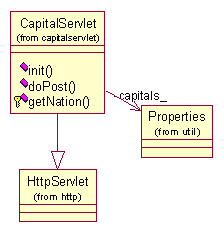

|
||||||||||
| PREV PACKAGE NEXT PACKAGE | FRAMES NO FRAMES | |||||||||
See:
Description
| Class Summary | |
| CapitalServlet | A servlet acting like a Web Service. |
Provides a class to demonstrate a simple web service implemented as
a servlet.
This example provides a web based look up service implmented as a servlet. This example servlet runs within the context of a web server. The service takes as an argument a given nation and returns the name of the capital for the given nation.
This example requires knowledge of web based services and servlets. This example is written based on using tomcat as the webserver. You can download it from the following location:
http://jakarta.apache.org/tomcat
The example is NOT built using the standard method for building and running as described elsewhere in the documentation. Tomcat50-jwsdp needs to be installed. Within the targets directory for the capitalservlet package there is an ant file (build.xml) used to build the servlet. The following line of the file must be updated so that the value of the "tomcat.home" property matches the install directory for tomcat on your computer, for example if the tomcat server is in the "C:\Sun\Tomcat50-jwsdp" directoty, then the value of the "tomcat.home" property should be "C:\Sun\Tomcat50-jwsdp".
Within the targets directory for the capitalservlet package type the following command:
ant -f build.xmlThe result of the build is a war (Web ARchive) file. This file is located in the release directory and should be copied to the webapps folder of the tomcat installation and then the web server should be restarted (see tomcat documentation).
Once the web server has been restarted the servlet is now ready to process requests as they arrive and perform the getCapital service.
The class provides methods for retrieving information ....
Application classes
- CapitalServlet
System classes
- Properties
- HTTPServlet

The web service is accessed using POST. A nation's name is provided in the request. The servlet extracts the nation name from the request and performs a look up for the capital using a properties file. The servlet creates and sends the service response, a manually generated SOAP message. The nation's capital is included within the response soap message.
This example accompanies the CapitalClient example and illustrates the server side of the web services example.
|
||||||||||
| PREV PACKAGE NEXT PACKAGE | FRAMES NO FRAMES | |||||||||